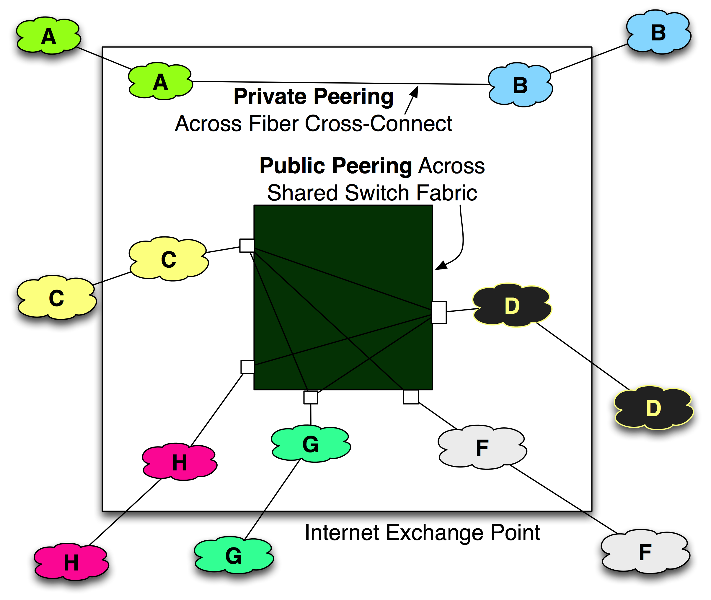
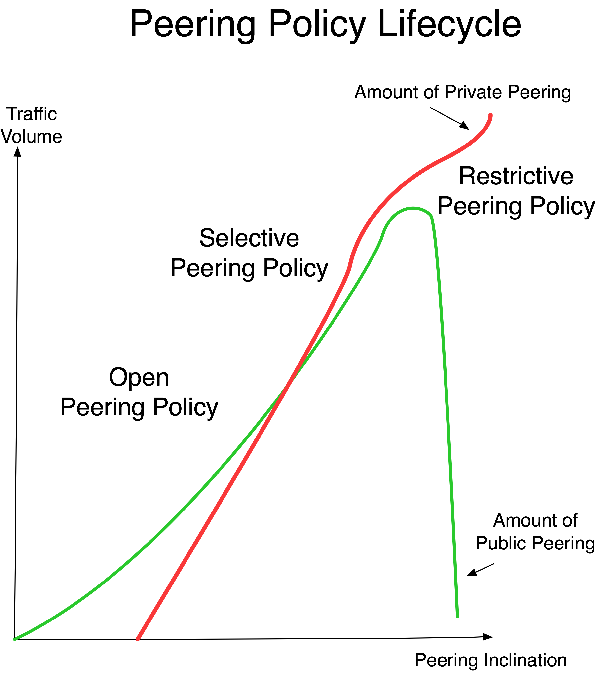

Chapter 7 - Public vs. Private Peering
In the peering coordinator community, the Public vs. Private Peering issue has generated much debate. In this chapter we will present the strongest arguments on each side of the debate.
This information was collected at “A Great Debate,” which I held at a NANOG Peering BOF. The more detailed points were collected from hallway discussions after the debate.
Introduction
When Internet Service Providers build into an IXP, they have two interconnect options. They can connect to the public switching fabric for the chance to interconnect with all of the participants connected to the switch. At some IXPs you can also interconnect privately, across a dedicated piece of copper or fiber called a “cross-connect.” Both of these methods are illustrated in Figure 7-1.
This chapter highlights some of the strong points of both approaches.
When comparing Public and Private Peering, we assume that both are taking place within a IXP. In particular, we assume that in both cases the cost of transport, colocation, power, etc. is identical. Only the equipment and peering services costs are considered along with the operations issues associated with each model.
We further assume that Private Peering involves interconnecting peers using Gigabit Ethernet over dedicated cross-connects. The Public Peering is accomplished by aggregating these same peering sessions across a 10G port on an IXP switch platform.

Figure 7-1. An IXP often supports both Public and Private Peering.
The Top 3 Reasons Public Peering Is Better Than Private Peering
Here are the strongest arguments presented from Public Peering advocates:
1. Public Peering Is Better Because of Aggregation Benefits.
a. A network can easily aggregate a large number of relatively small peering sessions across a single fixed-cost peering port, with zero incremental cost for each peer.
(Private Peering requires additional cross-connects and potentially an additional interface card for each peering session, so there are real costs associated with each incremental peering session.)
Small peering sessions often exhibit a high degree of variability in their traffic levels, making them perfect candidates for aggregation. Since not all peers peak at the same time, multiple peers can be multiplexed onto the shared peering interface card, with one peer’s peak traffic filling in the valleys of another peer’s traffic, helping make peering cost effective: “I can’t afford to dedicate a whole Gigabit Ethernet port to Private Peering with this guy, but Public Peering is a no-brainer.”
b. Public Peering ports usually have very large gradations of bandwidth: 100Mbps Ethernet upgrades to 1Gbps Ethernet, which upgrades to 10Gbps Ethernet and now 100Gbps.
With such large gradations, it is easier for smaller peers to maintain several times more capacity via Public Peering than they are currently using, reducing the likelihood of congestion due to shifting traffic patterns, bursty traffic, or uncontrolled Denial of Service (DoS) attacks. “Some peers aren’t as responsive to upgrading their peering infrastructure, nor are they of similar mind with respect to the desire for peering bandwidth headroom.” The large gradations of Public Peering bandwidth help reconcile these two issues.
2. Public Peering Administration Is Easier.
a. Public Peering is the easiest and fastest way to both turn up and turn down a peering session, since zero physical work is required. Peering is “soft configured” by the two parties on the router, and then the peering session is up. (Private Peering cross-connects must be ordered and provisioned/tested, and who pays for it has to be determined, etc.)
b. It is common for a network to set up a trial peering session to determine the amount of traffic that would be exchanged should a session be turned up. If Public Peering capacity is available, no incremental cost or extra administrative work is required to turn up a trial peer, and the information gathered may prevent choosing an incorrect Private Peering port size if the traffic is moved to a private peer later.
c. Many peering coordinators must work within a budget, and do not have decision-making authority for purchases within their company. Once the Public Peering switch port is ordered, there is no additional cost and, therefore, no additional hurdle to peering for the peering coordinator.
d. Public Peering provides financial predictability. The hardware requirements and monthly recurring costs of peering are the same every month, making planning and budgeting much easier.
e. 10G Public Peering scales large peering sessions (those greater than 1Gbps) seamlessly, while Private Peering beyond Gigabit Ethernet capacities requires Private Peering at 10G (more expensive), or link aggregation (connecting 10Gs together), which can be tricky. The same logic goes as the industry jumps gradations (today the peering port are 100G ports).
3. Customers Use Public Peering as a Selection Criterion.
a. Some corporate and enterprise customers continue to ask to see the list of the ISP’s Public Peering points.
b. Public Peering may be the only cost-effective way to peer across multiple colocation facilities.
c. Across Europe, where Public Peering across multiple collocation centers is the norm, Private Peering is often a much more expensive solution. Purchasing Private Peering circuits within a metro is potentially very expensive, while the same traffic can traverse a shared peering fabric for much less.
The Top 5 Reasons Private Peering Is Better Than Public Peering
Here are the strongest arguments that Private Peering advocates presented at the debate or shared with me in person:
1. Private Peering Sessions Are Easier to Monitor.
a. Private Peering monitoring is cheap and easy. SNMP counters can be easily collected on each peering port to monitor the utilization of the peering session resources. There is no time- or CPU-intensive Netflow data collection and processing, nor is any expensive network analysis software required to sort through routing data to determine per-peering-session traffic volume.
b. Private Peering provides greater visibility with no blind oversubscription problem. With Public Peering, the remote peer could be congesting his port with the other peering sessions, and you have no visibility into their Public Peering port utilization. Packets could be dropped because of port oversubscription, resulting in poor peering performance. Since Private Peering involves only the two parties, when the port reaches an agreed-upon utilization (say 60% utilization, for example), both parties can see that it is time to upgrade the peering session.
c. Some parties mandate migration to Private Peering should either side reach 40% utilization on its Public Peering port. Since this direction is the migration direction anyway, why not start there?
2. Private Peering Is Very Cost-Effective.
a. This conclusion is based on the fact that router ports are expensive and switch ports are cheap. Even if an expected interface card port and cross-connect costs were $800 per month and the parties were expected to send 4Gbps to each other, the traffic exchange cost would be only $800/4000Mbps=$0.50/Mbps – an attractive price compared to today’s transit market.
b. For those who exchange traffic with a few large peers, the 80-20 rule applies; the majority of peering benefits can be derived by peering with the 20% of potential peers that deliver 80% of your traffic, suggesting fewer larger peers is preferable over many smaller peers across a Public Peering fabric.
3. Private Peering Is More Reliable and Easier to Debug.
a. Private Peering involves fewer network components that could break. It should be noted that this argument weakens when the “private” peering sessions are provisioned across VLANs, through optical interconnects, telco provisioned SONET services, or other active electronics.
b. An architecture of Private Peering removes the variability of support processes across Public Peering IXPs. Across Europe, each IXP is different, and a NOC operator may need to understand the processes and the levels of support and debugging capabilities of the switch support staff on call at the IXP, and may even need to craft NOC scripts to navigate through the IXP operations tasks. A Private Peering architecture provides consistency that helps the NOC debug and fix things more rapidly.
c. One Public Peering fear is that layer 2 fabrics could be connected through other layer 2 fabrics, perhaps without the knowledge or consent of the peer, resulting in a very difficult debugging and diagnostics situation if a peering failure occurs.
4. Private Peering Sessions Are More Secure.
a. A Private Peering network that is directly connected only with those with whom there is an explicit peering arrangement is more secure than a network that connects to a Public Peering fabric that includes participants with whom there is no relationship with the company. There is some history here; early exchange points were places where “traffic stealing” was accomplished by pointing default at unsuspecting and poorly secured public peers. Other problems included peers tunneling traffic across the ocean across a peer’s network. These things are disallowed in most peering and IXP terms and conditions, and can be further secured through filtering, but they are still seen as potential hazards reduced by privately peering.
b. An architecture that solely privately peers is less likely to be compromised. With a switch or other active electronics in between peers, there is the possibility that traffic can be mirrored and captured at the peering point without detection. It is relatively easy to mirror a Public Peering port as compared with tapping into Private Peering fiber cross-connects without the detection of the peers involved.
5. Private Peering Inclination Signals a More Attractive Peer.
a. The “Big Players” privately peer with each other, and some even loath Public Peering fabrics for historical reasons. Adopting this attitude puts one in the company of the largest Tier 1 ISPs in the world. “For certain very large networks, Public Peering makes no sense at all. For certain very small networks, Public Peering may make perfect sense.” Or put more harshly, “if you think that Public Peering is a good idea, you’re just not large enough yet.”
Hybrid Approach (Public + Private Peering)
A combination of Public and Private Peering is common, where ISPs peer publicly and “peel off” peering sessions to Private Peering as the volume of traffic to and from those peers increases.
One ISP I spoke with primarily uses Private Peering but does maintain Public Peering for reserve and emergency interconnect capacity. The ability to scale Public Peering quickly and seamlessly was seen as a key attribute here. History has shown that traffic generally grows, incrementally or sporadically, from emergencies and spot events.
Vijay Gill shared his belief that ISPs go through a Peering Policy lifecycle as shown in Figure 7-2.

Figure 7-2. The Peering Policy Lifecycle.
When the networks first enter the peering ecosystem, they tend to be more open and willing to peer with anyone that can help decrease their transit expenses. During this time, Public Peering is preferred as a means to aggregate large numbers of small peering sessions.
As networks grow they tend to implement a hybrid of public and Private Peering, and adopt a more selective Peering Policy.
The largest ISPs in every Internet region studied tend to migrate exclusively to Private Peering and are very restrictive with respect to whom they are willing to peer with. Since there are few peers, dedicated Private Peering ports scale very well.
We will discuss peering policies and the broader Internet Peering Ecosystem dynamics next.
Peering Workshop Practice Questions
Here are a few practice questions from the Internet Peering Workshop:
1. Based solely on the interconnect costs of peering (cross-connects at $300/month) and the cost of Public Peering ports (a 10G port at $1400/month), how much peered traffic would make an ISP indifferent between the two?
2. Why might a large ISP prefer Private Peering?
3. Why might a small ISP prefer Public Peering?
Answers to these questions are in the answer key in the back of the book.